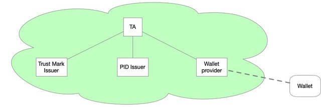

A Wallets initial steps
The EUDI Wallet Technical Specifications used:
The Italian profile version 0.7.1
System layout
A small OpenID Federation (the green cloud) containing 4 entities:
- TA
- A Trust Anchor - the trusted 3rd party
- PID Issuer
- Issuer of PID Credentials
- Wallet Provider
- Wallet Provider - the connection between the Federation and the Wallet
- Trust Mark Issuer
- Issuer of Trust Marks. In this case of trust marks that shows what kind of
credential Issuer an entity is.

The Wallet is not part of the OpenID Federation but has the capability to query the Federation for information.
Software used
- IdpyOidc: A Python implementation of everything OpenID
Connect and
OAuth2.
- SATOSA - A configurable proxy for translating between
different authentication protocols such as SAML2, OpenID Connect and OAuth2.
- Fedservice - Implementation of OpenID Federation
- IdpySDJWT - Selective Disclosure for JWTs (SD-JWT)
- OpenID4V - OpenID4VP and OpenID4VCI
- satosa-openid4vci - Credential Issuer as front-end to
SATOSA